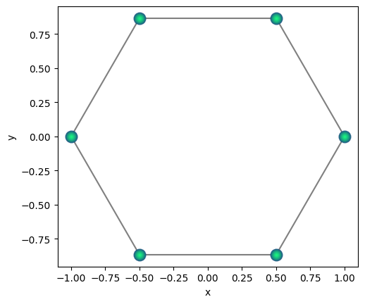
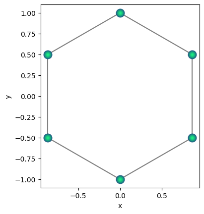
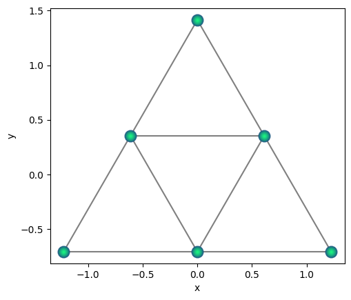
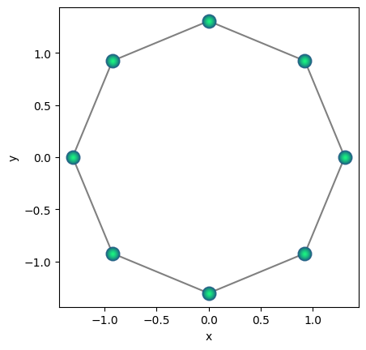
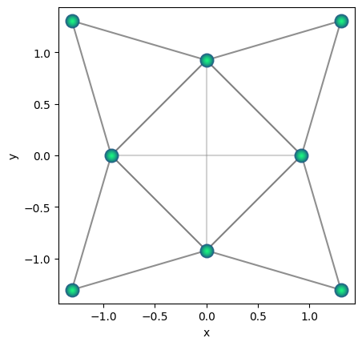
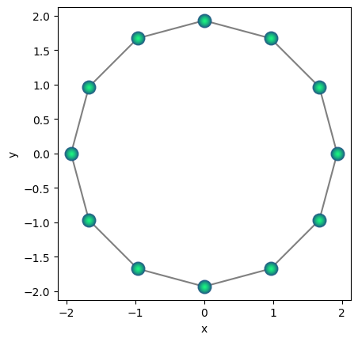
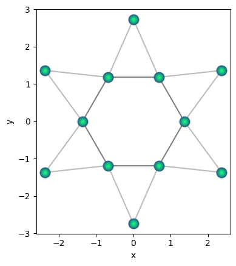
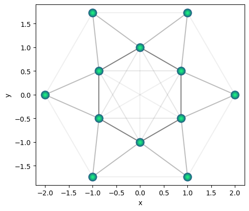

Finite geometries#
Here we list a few examples of manipulating finite geometries. First we import the necessary modules.
import qse
import numpy as np
Now we generate a hexagon.
qhex = qse.lattices.ring(1.0, 6)
qhex.draw(radius=1)

Now lets rotate it by 30 degrees.
qhex.rotate(30)
qhex.draw(radius=1)
print(qhex.positions.round(6))
[[ 0.866025 0.5 ]
[ 0. 1. ]
[-0.866025 0.5 ]
[-0.866025 -0.5 ]
[-0. -1. ]
[ 0.866025 -0.5 ]]

Now we scale the positions of qubits. All the points are defined around origin, and we scale the alternating points inversely.
scale = np.sqrt(2)
qhex.positions[::2] *= 1 / scale
qhex.positions[1::2] *= scale
qhex.draw(radius=2)

Let’s try another example with octagon geometry.
qoct = qse.lattices.ring(1.0, 8)
qoct.draw(radius=1)

Here also we scale inversely the alternating points.
scale = np.sqrt(2)
qoct.positions[::2] *= 1 / scale
qoct.positions[1::2] *= scale
qoct.draw(radius=2)

Here is a combined example with 12 points.
q12 = qse.lattices.ring(1.0, 12)
q12.draw(radius=1)
scale = np.sqrt(2)
q12.positions[::2] *= 1 / scale
q12.positions[1::2] *= scale
q12.draw(radius=2)


We can also create structures by adding different Qbits objects. See below
npoints = 6
qq = qse.Qbits()
qq.remove_dim("z")
for i, r in enumerate(np.linspace(1, 2, 2)):
q = qse.lattices.ring(r, npoints)
q.rotate(180 * (i + 1) / npoints)
qq += q
qq.draw(radius=2)
qq.nqbits
12
